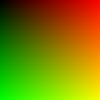
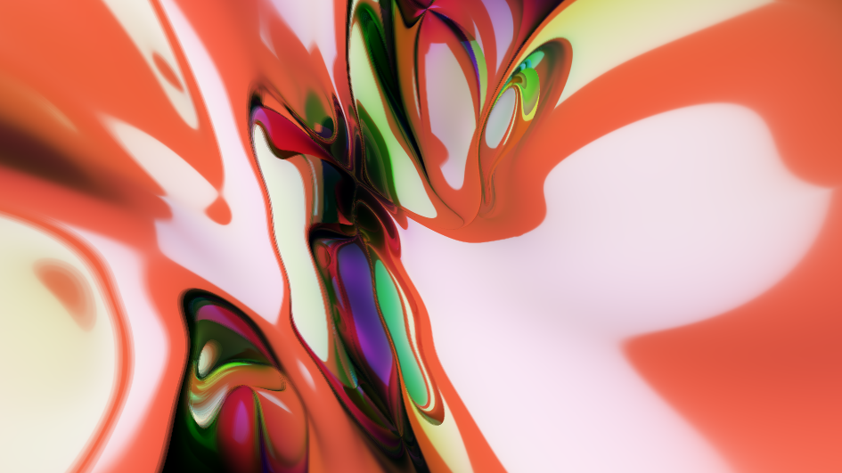

Chapter 1 颜色和着色器
对于刚接触图形学的人来说，第一个想要了解的问题，图形学研究的是什么？简要的回答是，图形学研究渲染器中的理论，算法和工程架构。所谓的渲染器不过是一个简单的程序，输入一个描述3D场景的场景文件，输出这个场景所对应的一张图片。
大多数人对于图片的概念，不过是电脑上的JPG和PNG文件。如果使用Photoshop之类的软件打开任何一张图片，就会发现图片由一组带颜色的小格子构成.每一个格子称之为像素。对于每一个像素来言，一般来说由三种颜色构成，或者称为三个通道，即红绿蓝通道。每一个通道的取值均为\([0,1]\)。对于一些半透明的图片来说，还会引入第四个通道，即透明通道。同样透明通道的的取值范围也是\([0,1]\)。
如果一个像素的颜色为\((1,0,0,1)\)，像素的四个通道一般情况以RGBA的顺序排列，那么很显然这个像素为红色。同样的，如果是\((1,1,0,1)\)，那么该像素呈现红色和绿色的混合颜色黄色。
对于每一个像素来说，由于\([0,1]\)是一个浮点数，如果我们单纯使用单精度浮点类型float进行存储，对于一个包含RGBA四通道的像素来说，其大小为\(32*4\)，128个bit，即16个byte。对于一张1920x1080分辨率的图片来说，这需要\(16*1920*1080=33177600\)个byte，相当于32MB的大小。事实上，人眼分辨颜色的能力是有限的，如果我们仅仅使用8个bit来表示一个通道，那么对于每个通道我们将会获得256种颜色。红色，绿色，蓝色的混合可以得到\(256*256*256\)，大约一千六百万种颜色。8bit相对32bit，每个像素仅仅需要4个byte即可存储，通过一些合适的压缩算法，我们就能将一张1920x1080分辨率的图片合理压缩到2~3MB的大小。
因此，绝大部分的图片和颜色都采用8bit的方式来存储。由于8bit刚好可以用\([0,255]\)区间的整数或者是两个16进制数表示，很多程序，比如HTML，就会使用16进制颜色编码来，例如#2980b9ff，来表示颜色。在C语言中，我们则可以使用char类型来表示一个通道的数值。
1.1 第一个实验：C++生成单颜色图片
有了对图片和像素的基本了解，我们不妨在C++做一个小实验来生成一张只有颜色的图片。
既然要生成图片，首先我们要考虑图片的格式。对于绝大多数的图片格式来说，其像素都是由一个一维数组构成。其数组的长度等于图片的宽度乘以图片的高度乘以每个像素的通道数量，即：
\[ len = width * height * channels \]
stb是一个小巧的C++头文件库，提供了基础图片格式的读写操作。我们可以通过GitHub获取，https://github.com/nothings/stb/blob/master/stb_image_write.h。
在此，我们将使用stbi_write_png(char const *filename, int w, int h, int comp, const void *data, int stride_in_bytes)函数将我们的图片数据保存为PNG格式。
stbi_write_png函数由六个参数构成，第一个参数是文件路径，第二和第三个参数是图片的宽度和高度。第四个参数表示图片数据的通道数量。由于不需要使用透明通道，因此三通道图片即可满足要求。第五个参数表示图片数据。由于我们的图片数据是一个一维数组，stride_in_bytes则表示每行的像素数据的长度。
了解了stbi_write_png函数的参数，在我们的例子中，我们可以将其简化为stbi_write_png(char const *filename, int w, int h, 3, const void *data, w*3)。
下面关注数据部分。我们只需要生成一张不透明的颜色图，假定其为200x200分辨率，同时使用8 Bit颜色格式。因此，我们只需要声明一段像素数组：
char pixels[200*200*3];最后我们将其组装在一起，得到我们的第一个小程序：
// single-color.cpp
// This line is required for stb image library
#define STB_IMAGE_WRITE_IMPLEMENTATION
#define STB_IMAGE_WRITE_STATIC
#include <stb/stb_image_write.h>
int main()
{
int w = 200;
int h = 200;
int c = 3;
char pixels[w * h * c];
for (auto x = 0; x < w; x++)
for (auto y = 0; y < h; y++) {
pixels[(y * w + x) * c + 0] = (char)255;
pixels[(y * w + x) * c + 1] = (char)0;
pixels[(y * w + x) * c + 2] = (char)0;
}
stbi_write_png("single-color.png", w, h, c, pixels, w * 3);
return 0;
}我们编译并运行该程序，即可获得一张名为single_color.png的红色图片。
接下来，我们将在这个基础上，做一些简单的调整，让我们输出的图片更加的漂亮。
1.2 第二个实验：屏幕空间坐标和着色器
在第一个实验中，我们通过设置像素数组的数值来实现输出颜色的目的。我们不妨把程序做一个稍稍的整理。
首先是颜色，由于每一个像素都由三个通道构成，我们可以如此定义颜色：
struct Color {
char r;
char g;
char b;
};那么我们像素数组即变成:
Color pixels[width*height];得益于C++的特性，虽然我们增加了Color类型，但数据在内存排布上和之前的数组则没有任何差别。
我们再将生成颜色的代码整理成一个函数，以便我们更好的控制颜色的生成过程。
Color PixelColor(int x, int y, int width, int height);这里我们注意到，我们需要传递四个参数。然而在渲染过程中，我们大多只关心渲染的结果，而忽略渲染输出的分辨率。同一张图片，只要长宽比相同，1080P和4K应该仅仅只有清晰度的区别，而不会有任何内容上的不同。
对此，我们可以将PixelColor函数做一个简单的简化：
Color PixelColor(float u, float v);其中u = x/(float)width，v = y/(float)height。经过此变换，一个像素的颜色仅仅只和这个像素在屏幕上的位置相关，和屏幕的分辨率的大小不相关。
最后，我们将这些组件拼装在一起，并生成一张具有渐变颜色的图片。
// gradient-color.cpp
// This line is required for stb image library
#define STB_IMAGE_WRITE_IMPLEMENTATION
#define STB_IMAGE_WRITE_STATIC
#include <stb/stb_image_write.h>
struct Color {
char r;
char g;
char b;
};
Color PixelColor(float u, float v) {
Color c;
c.r = (char)(u * 255);
c.g = (char)(v * 255);
c.b = 0;
return c;
}
int main() {
int w = 200;
int h = 200;
int c = 3;
Color pixels[w * h];
for (auto x = 0; x < w; x++)
for (auto y = 0; y < h; y++) {
auto u = x / (float)w;
auto v = y / (float)h;
pixels[y * w + x] = PixelColor(u, v);
}
stbi_write_png("gradient-color.png", w, h, c, pixels, w * 3);
return 0;
}
让我们来回顾一下我们在实验中用到的函数和参数。
首先我们建立起了屏幕空间的坐标系，这一个坐标系在左上方为\((0,0)\)，右下方为\((1,1)\)。图片的颜色仅仅和坐标系的坐标有关，而和屏幕的大小无关。我们在之后空间变换的部分还会重新回顾屏幕空间坐标系。
第二个重要的改变是我们把具体的颜色生成过程移动到了PixelColor函数中去。该函数会生成每一个像素的颜色。我们把计算像素颜色的过程称之为着色，而负责着色的函数则称之为着色器。
我们会在后续的章节继续介绍着色器的概念。如果你曾经接触过一些图形学的书籍，事实上，在此我们所写的PixelColor函数就是一个简化的像素着色器。
更重要的是，PixelColor函数只关心一个像素的颜色，而不关心周围像素的颜色，也不使用任何其他像素的颜色作为其计算的基础。因此该函数没有任何的依赖关系。正是如此，像素着色器能够被高度的并行优化，而在GPU上，每一个像素着色器都是并行计算，从而实现快速实时渲染。
1.3 像素着色器的魔法
虽然我们的程序很短，实际上我们已经实现了一个完整的像素着色的过程。仅仅依赖于像素着色器，和GPU的并行计算的优势，我们就可以创建无数优美的图画。
ShaderToy是一家专注于发布和分享像素着色器的平台。无数的艺术家、程序员在上面创建了各种魔法般的图案。
